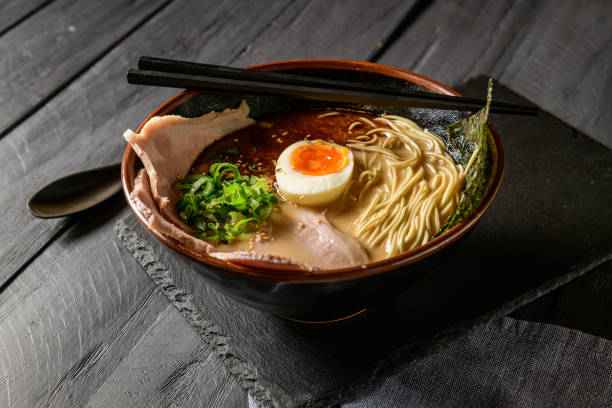

Ramen

Description
Tonkotsu ramen, a luxurious staple of Japanese cuisine, is celebrated for its rich, creamy broth that simmers for hours, coaxing out the deep, savory flavors from pork bones. This culinary masterpiece is a symphony of textures and tastes, featuring tender slices of pork, soft-boiled eggs marinated to perfection, and springy noodles, all swimming in a luscious soup. The dish is artfully garnished with vibrant green onions, earthy wood ear mushrooms, and a hint of spicy pickled ginger, creating a harmony of flavors that dance on the palate. Each slurp is a testament to the meticulous craft of ramen-making, inviting you to savor the complexity and depth that define this beloved dish.
Ingredients
- 2 lbs pork bones
- 1 lb pork belly
- 4 large eggs
- 1 lb fresh ramen
- 4 green onions, finely chopped
- 1 piece of kombu
- Pickled ginger
- 1/2 cup soy sauce
Instructions
- Begin by preparing the pork bones: place them in a large pot, cover with cold water, and bring to a boil. Once boiling, drain and rinse the bones to remove impurities. This step ensures a clear broth.
- Refill the pot with fresh water (about 4-6 cups), add the cleaned bones back, and bring to a boil. Reduce the heat to a simmer, adding the piece of kombu. Let this simmer for at least 6 hours, occasionally skimming off any foam that forms on the surface.
- While the broth simmers, prepare the chashu (pork belly): Roll the pork belly tightly and tie with butcher's string. In a separate pot, combine soy sauce, mirin, sake, sugar, garlic, and ginger with 2 cups of water. Add the pork belly, bring to a boil, then reduce to a simmer. Cover and cook for about 2 hours until tender. Once done, let it cool in the liquid, then slice thinly for serving.
- For the soft-boiled eggs: Bring a pot of water to a boil, gently lower the eggs in, and cook for exactly 7 minutes for a soft, slightly runny yolk. Immediately transfer to an ice bath to stop the cooking process. Once cooled, peel the eggs and marinate in a mix of soy sauce and mirin for at least 4 hours, or overnight for deeper flavor.
- When the broth is nearly done, remove the kombu and strain the broth through a fine mesh sieve to remove the bones and any solid impurities. Season the broth with salt, keeping in mind the saltiness of the chashu and marinated eggs that will be added later.
- Prepare the ramen noodles according to the package instructions, ensuring they remain al dente. Drain well and set aside.
- Assemble the ramen bowls: Place a serving of noodles in each bowl. Pour the hot broth over the noodles, then top with slices of chashu, a soft-boiled egg cut in half, bamboo shoots, wood ear mushrooms, and green onions. Add a dollop of pickled ginger and a sprinkle of sesame seeds to each bowl.
- For those who enjoy a bit of heat, offer chili oil or spicy bean paste on the side to be added to taste.